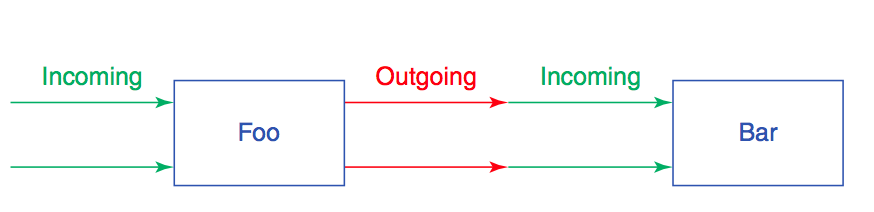
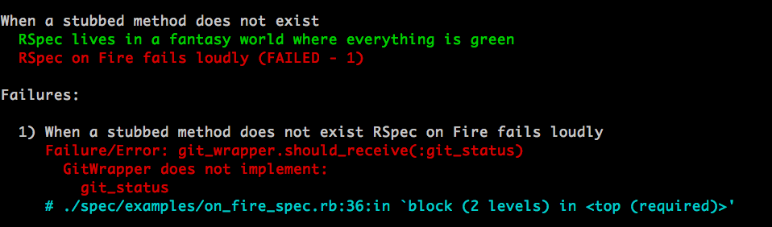

class Git
def status
'*' if dirty?
end
def dirty?
"WTF!"
end
end
describe "Git #status" do
context "when some files have been changed" do
before { @decorator = Git.new }
it do
@decorator.stub dirty?: true
@decorator.status.should end_with('*')
end
end
end

Unit tests are consumers of your class interface. A well written unit test should have no awareness of the internal workings of your class
=> do not stub the Class Under Test private methods
To force the Class Under Test down a path it may or can’t exercise (e.g. rescue exceptions).
# TODO
For faster unit tests:
vcr is your best friend
Never!
Design.
http://martinfowler.com/articles/mocksArentStubs.html
TDD the interface of dependencies which do not exist.
Most programmers write too many tests. … To get better value from tests is to write fewer of them. The safest way to accomplish this is to test everything just once and in the proper place.

class StatusFinder
def currently(status)
# ...
query_builder.filter(relation, status)
end
private
def query_builder
@query_builder ||= SnStatusFinderQueryBuilder.new(ability)
end
end
describe '#currently' do
subject(:finder) { SnStatusFinder.accessible_by(@ability) }
it 'should delegate to the query builder' do
finder.send(:query_builder).should_receive(:filter)
finder.currently(:pending)
end
end
class SnLocalRecipientsCsvPresenter
def initialize(memberships, membership_ids = [])
@memberships = memberships
@membership_ids = membership_ids
end
def export
::CSV.generate do |csv|
csv << header
memberships.find(membership_ids).each do |person|
data = []
data << person.study_code
# ...
csv << data
end
end
end
private
def header
["Study", "Role", "Site #", "Site Name", "First Name", "Last Name", "Email"]
end
end
MembershipMock = Struct.new("Membership", :study_code,
:role_name, :site_num, :site_name, :first_name, :last_name, :email)
describe SnLocalRecipientsCsvPresenter do
let(:header){ "Study,Role,Site #,Site Name,First Name,Last Name,Email" }
let(:membership){ MembershipMock.new(*header.split(",")) }
describe "export" do
before do
@memberships = double("Membership")
end
describe "when there's no shipment_ids" do
it "returns the csv headers" do
@memberships.stub(:find){ [] }
csv = SnLocalRecipientsCsvPresenter.
new(@memberships, nil).export
expect(csv).to eq "#{header}\n"
end
end
end
end
This choice between injecting real or fake objects has far-reaching consequences. Injecting the same objects at test time as are used at runtime ensures that tests break correctly but may lead to long running tests. Alternatively, injecting doubles can speed tests but leave them vulnerable to constructing a fantasy world where tests work but the application fails.
rspec-mock version:
dependency = double(Dependency) dependency.should_receive(:a_call)
on Fire version:
dependency = instance_double(Dependency) dependency.should_receive(:a_call)
require 'rspec/fire'
RSpec.configure do |config|
config.include(RSpec::Fire)
end
class Git
def initialize(git_wrapper = GitWrapper.new)
@git_wrapper = git_wrapper
end
def status
"*" if @git_wrapper.is_dirty?
end
end
class GitWrapper
def dirty?
end
end
describe "When a stubbed method does not exist" do
it "RSpec lives in a fantasy world where everything is green" do
git_wrapper = double("GitWrapper")
git_wrapper.should_receive(:is_dirty?).and_return(true)
Git.new(git_wrapper).status
end
it "RSpec on Fire fails loudly" do
git_wrapper = instance_double("GitWrapper")
git_wrapper.should_receive(:is_dirty?).and_return(true)
Git.new(git_wrapper).status
end
end

rspec-mock version:
Delayed::Job.should_receive(:enqueue)
on Fire version:
dj_class = class_double("Delayed::Job").as_stubbed_const
dj_class.should_receive(:enqueue)
/
#